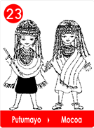
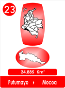

 
Cuando nació Mayita, su mamá le puso un nombre muy lindo, la llamo "Luna Bella ", porque había nacido una noche de luna llena.
Por eso Mali le contaba a su pequeña que era una niña muy privilegiada, que cuando nació, ella no tuvo ningún inconveniente, pues los rayos de la luna la habían ayudado en el parto.
Por eso "Luna Bella ", se sentía muy feliz, pero cierto día ya bien crecidita, vio que su joven madrecita, lloraba porque unas vecinas decían que al buen papá, se lo había tragado un jaguar.
Entonces se fue derechito donde el Chaman de las Semillas Mágicas, el que decían que evitaba el mal de ojo, que era lo que Mayita entendía, que le deseaban las malas vecinas tan habladoras!
En la jícara de cumare que le servia de bolsa, llevó muchas y buenas yerbas para el Chaman, que le sirvieran para las curaciones, semillas que guardaban en el calabazo, para arreglar las molestias del estómago, la garganta y los golpes.
Y le dijo que le traía las semillas para que el le diera una fórmula para que su mamita no siguiera tan triste.
El Chaman se las cambió por muchas semillas de la tierra. Chochos, catapes, campanitas, chaquiras, y pepas secas de calabaza, se las envolvió en hojas de cañabrava y le añadió muchas tiritas de buen cumare seco.
Y le dijo:
Para que tu madrecita se sienta feliz, hazle unos bellos collares, ella secará sus lágrimas, y espera un poquito, tu padre volverá "
Entonces "Luna Bella", se fue saltando de alegría, le hizo a Mali muchos y bellos collares y su adorable madrecita al verlos dejo de llorar.
Luego a los pocos días, llegó el buen padre y todos estuvieron felices.